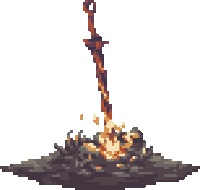

── ── ── ── ── ── ── ── ── ── ── ── ── ── ── ── ── ── ── ── ── ── ── ── ── ── ── ── ──
 Thassanai McCabe
Thassanai McCabeOriginally from Thailand and now based in Ireland, my cybersecurity journey began in Incident Response at ReliaQuest. In the SOC, my days were defined by high-pressure environments, live triage, and containing active compromises. I spent countless hours digging through raw event logs, tracing lateral movement, and analyzing endpoint data to eject threat actors from enterprise networks. I learned an incredible amount from my peers and mentors in this role (Thank you SGA <3).
Witnessing these attacks firsthand taught me how attackers operate, but it also sparked a big shift in my perspective. Evicting an attacker solves today's emergency, but true defense requires understanding where they are going tomorrow. I wanted to move from a reactive posture of stopping the bleeding to a proactive one.
This realization drove my transition into Cyber Threat Intelligence.
As a Threat Intelligence Researcher, I use my frontline IR experience to track the adversary for the wider security community. My work focuses on looking outside the enterprise perimeter to study the threat actors behind the keyboard, their financial motives, and their global infrastructure.
Operating under the broader threat research umbrella allows me to collaborate closely with our threat hunting and detection engineering teams. I am incredibly fortunate to work alongside brilliant people who inspire and push me forward every day. This environment allows me to contribute to a mission much larger than myself, protecting organizations on a global scale.
One of the most rewarding outcomes of this work is seeing original research I produce get shared and discussed across the industry, from major technical news vendors like BleepingComputer to global cybersecurity forums.
⦾ Mapping out command-and-control (C2) networks, tracking bulletproof hosting providers, and identifying malicious domains before they are weaponized in active campaigns.
⦾ Researching underground forums, marketplaces, and ransomware-as-a-service (RaaS) leak sites to track Initial Access Brokers (IABs) and leaked credentials.
⦾ Studying the financial structures and monetization trends that fuel modern cybercriminal networks to help organizations anticipate attacks.
When I am offline and away from the screen, I teach myself how to work on cars after being inspired by my dad. When not under the hood I am collecting Pokemon cards and other various tidbits!
